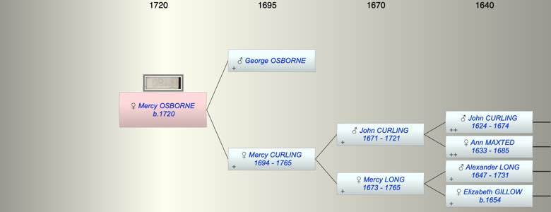

| [Index] |
| Mercy OSBORNE (1720 - ) |
|  |
| b. 1720 at Lydden |
| Parents: |
| George OSBORNE |
| Mercy CURLING (1694 - 1765) |
| Siblings (2): |
| Emlim. Emblem OSBORNE (1715 - 1778) |
| Elizabeth OSBORNE (1721 - ) |
| Events in Mercy OSBORNE (1720 - )'s life | |||||
| Date | Age | Event | Place | Notes | Src |
| 1720 | Mercy OSBORNE was born | Lydden | Note 1 | ||
| 1765 | 45 | Death of mother Mercy CURLING (aged 71) | Ramsgate | Note 2 | |
| Created on a Mac™ using iFamily for Mac™ on 8 Oct 2023 |